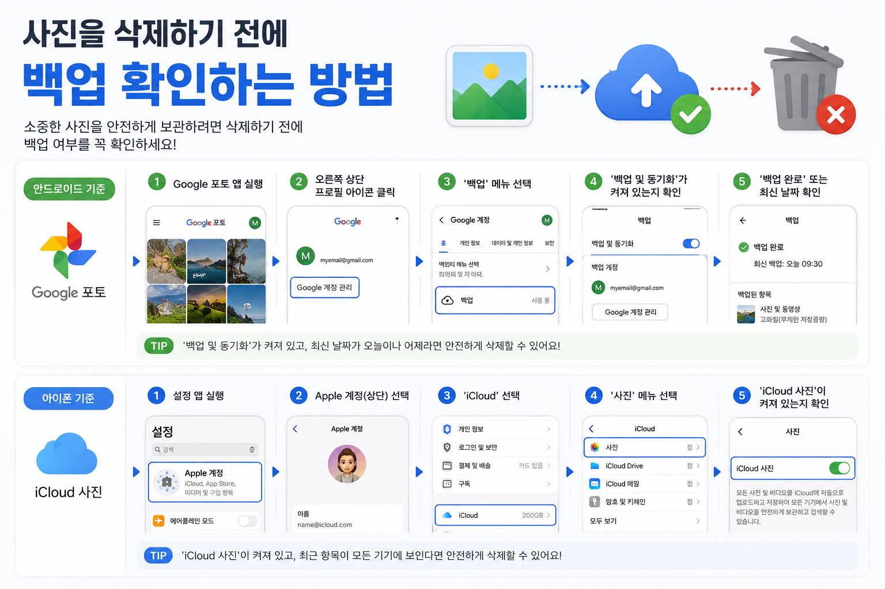

사진을 삭제하기 전에 백업 확인하는 방법
사진을 정리하기 전에 클라우드 백업 완료 여부와 다른 기기에서 보이는지 확인해 자료 손실을 줄이는 방법입니다.

디지털 기기와 앱 설정은 한 번에 모두 바꾸기보다, 현재 상태를 확인하고 필요한 부분부터 차근차근 조정하는 편이 안전합니다. 이 글은 처음 확인할 항목과 정리 순서, 주의할 점을 함께 볼 수 있도록 구성했습니다.
사진 삭제 전 확인이 필요한 이유
휴대폰 저장공간이 부족할 때 사진을 가장 먼저 지우는 경우가 많습니다. 하지만 사진은 다시 만들기 어려운 개인 자료가 많아 삭제 전에 백업 상태를 확인해야 합니다. 백업이 된 줄 알았는데 동기화가 멈춰 있거나 일부 폴더만 제외된 경우도 있습니다.
백업 완료 표시 확인하기
클라우드 앱에는 보통 백업 완료, 동기화 완료, 업로드 중 같은 상태 표시가 있습니다. 사진을 삭제하기 전에는 이 표시가 완료 상태인지 확인해야 합니다. 와이파이가 끊겼거나 저장공간이 부족하면 일부 사진만 백업된 상태일 수 있습니다.
다른 기기나 웹에서 열어보기
백업 완료 표시만 보고 바로 지우기보다 다른 기기나 웹브라우저에서 사진이 실제로 열리는지 확인하는 것이 안전합니다. 특히 오래된 사진, 중요한 문서 사진, 가족 사진처럼 꼭 남겨야 하는 자료는 몇 장이라도 직접 열어보는 편이 좋습니다.
원본 화질과 저장공간 절약 옵션 이해하기
클라우드 서비스에 따라 원본 화질로 저장되는 경우와 용량을 줄여 저장되는 경우가 있습니다. 사진 보관 목적이 단순 확인용인지, 인쇄나 장기 보관용인지에 따라 설정을 다르게 보는 것이 좋습니다. 중요한 사진은 원본 파일을 별도 저장장치에 한 번 더 보관하는 것도 방법입니다.
휴지통 보관 기간 확인하기
사진을 삭제하면 바로 완전히 사라지는 것이 아니라 휴지통에 일정 기간 보관되는 경우가 많습니다. 하지만 보관 기간이 지나면 복구가 어려워질 수 있습니다. 삭제 후에는 휴지통에 들어갔는지, 복구 가능한 기간이 얼마나 되는지 확인해 두면 실수를 줄일 수 있습니다.

삭제하거나 옮기기 전 마지막 확인
- 백업 완료 표시 확인하기
- 다른 기기나 웹에서 사진 열어보기
- 원본 화질 저장 여부 확인하기
- 중요 사진은 별도 저장장치에도 보관하기
- 삭제 후 휴지통 보관 기간 확인하기
설정을 바꾸거나 파일을 삭제하기 전에는 중요한 자료가 남아 있는지 한 번 더 확인하는 것이 좋습니다. 가족과 함께 쓰는 기기나 업무용 계정이라면 변경 내용을 공유해 두면 불필요한 혼선을 줄일 수 있습니다.
사진 삭제 전 실제로 확인할 상황
저장공간이 부족해 사진을 지우기 전에는 원본이 어디에 남아 있는지부터 확인해야 합니다. 구글 포토, iCloud, PC 백업, 외장 저장장치 중 어느 쪽에 원본이 있는지 헷갈리면 삭제 후에도 복구가 어려울 수 있습니다.
사진 정리에서 가장 위험한 실수
썸네일만 보고 백업됐다고 판단하거나 동기화 중인 상태에서 원본을 삭제하는 일이 많습니다. 백업 완료 표시, 휴지통 보관 기간, 원본 화질 설정을 확인한 뒤 날짜별로 조금씩 정리하는 편이 안전합니다.
사진 백업 관련 설정을 먼저 확인해야 하는 이유
사진 백업 관련 설정은 단순히 메뉴 하나를 켜고 끄는 문제가 아니라, 실제 사용 흐름에서 어떤 불편을 줄이려는지 먼저 정해야 합니다. 같은 메뉴라도 기기 제조사, 운영체제 버전, 앱 업데이트 상태에 따라 이름이 달라질 수 있으므로 현재 화면을 기준으로 차근차근 확인하는 것이 좋습니다.
사진 백업에서 자주 생기는 실수
사진 삭제 전을 정리할 때는 되돌리기 어려운 삭제나 계정 변경을 마지막 단계로 미루는 것이 좋습니다. 먼저 표시, 알림, 권한처럼 쉽게 복구할 수 있는 항목부터 확인하면 실수 부담을 줄일 수 있습니다.
사진 백업 점검 후 다시 볼 부분
사진 삭제 전은 사용자마다 필요한 범위가 다르기 때문에, 자주 쓰는 앱과 계정부터 적용하는 편이 좋습니다. 바꾸기 전 화면과 바꾼 뒤 결과를 비교하면 어떤 설정이 실제로 도움이 됐는지 판단하기 쉽습니다.